2010 After Burn Report
Welcome
While BRC Census has been producing reports since 2002, it is hard to compare recent data with reports from earlier years (before 2013) because of important differences in methodology, from a convenience sample of self-selected Census takers on-playa to a weighted online survey conducted after the Man burns.
Age
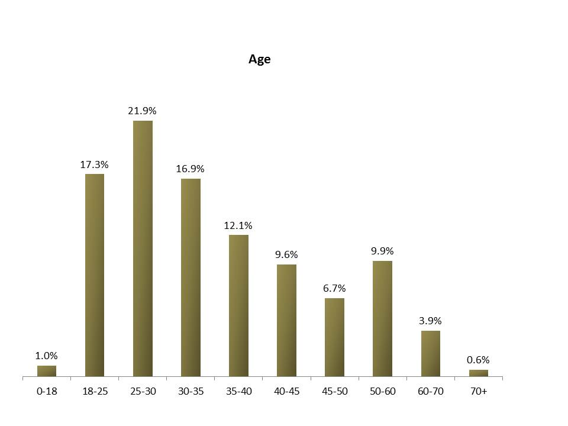
Participant Arrival Date
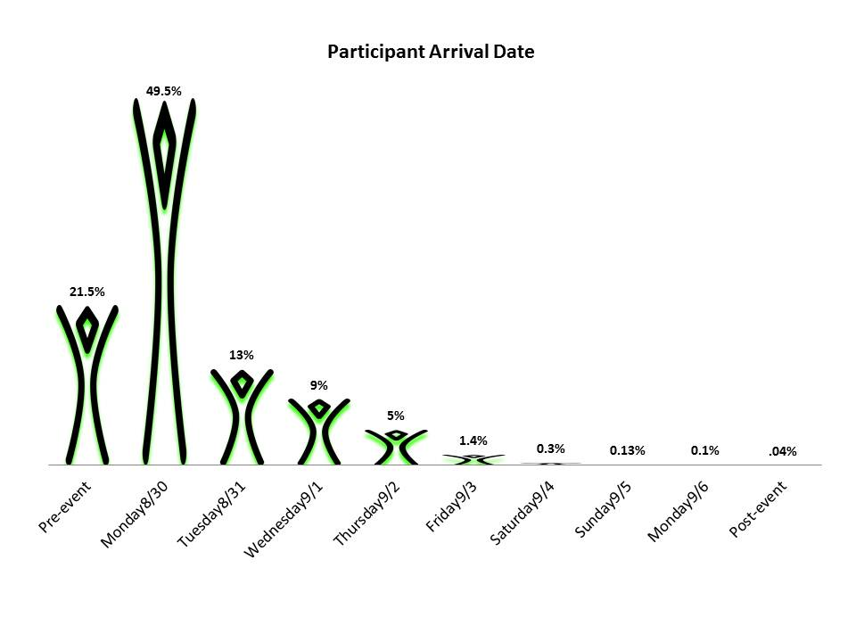
Date of census completion
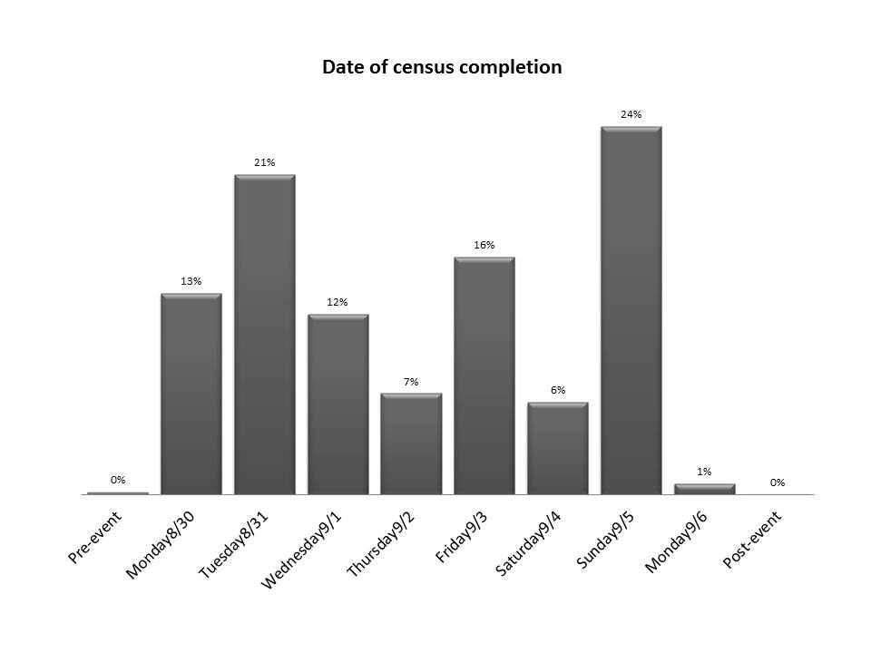
Participant Departure Date
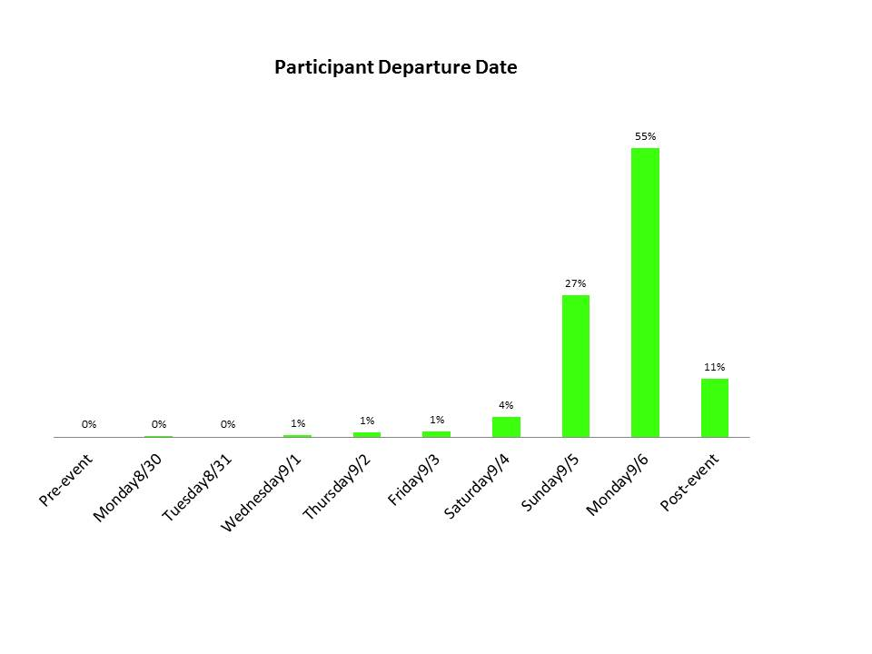
Highest level of education completed
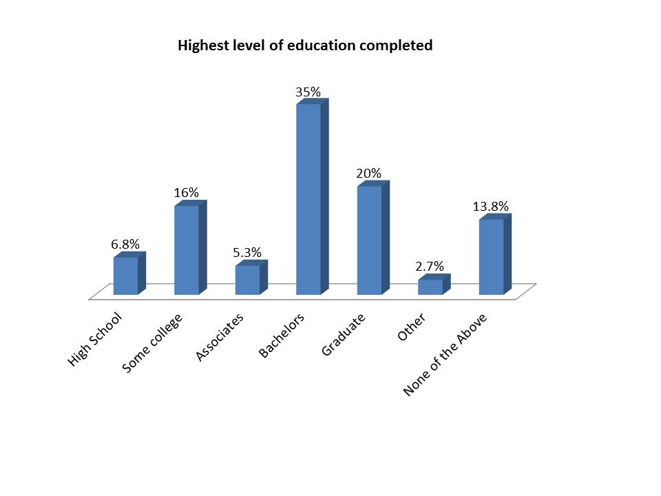
Percentage of respondents with annual income in range
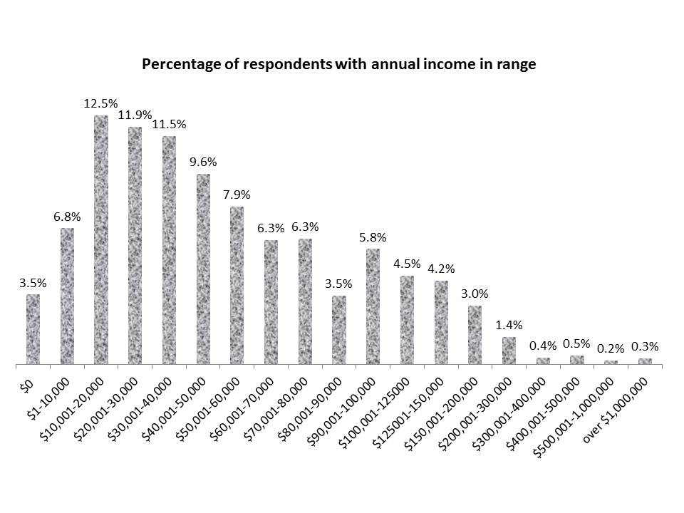
Marriage status
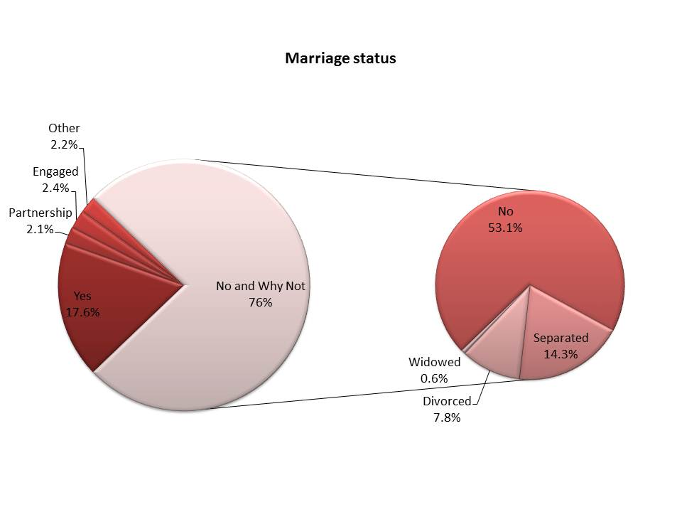
Do you consider yourself a person of color?
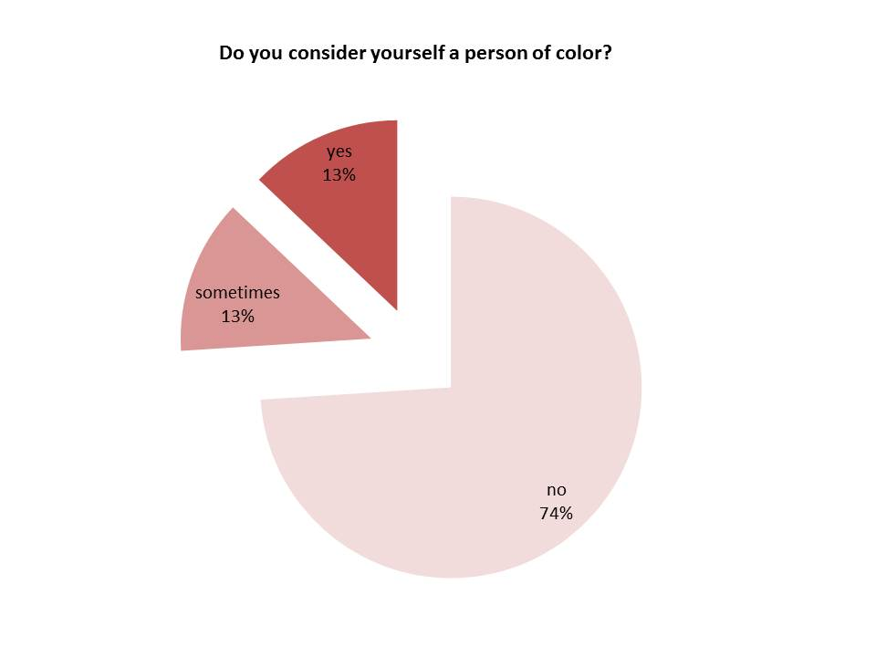
Is your camp a theme camp?
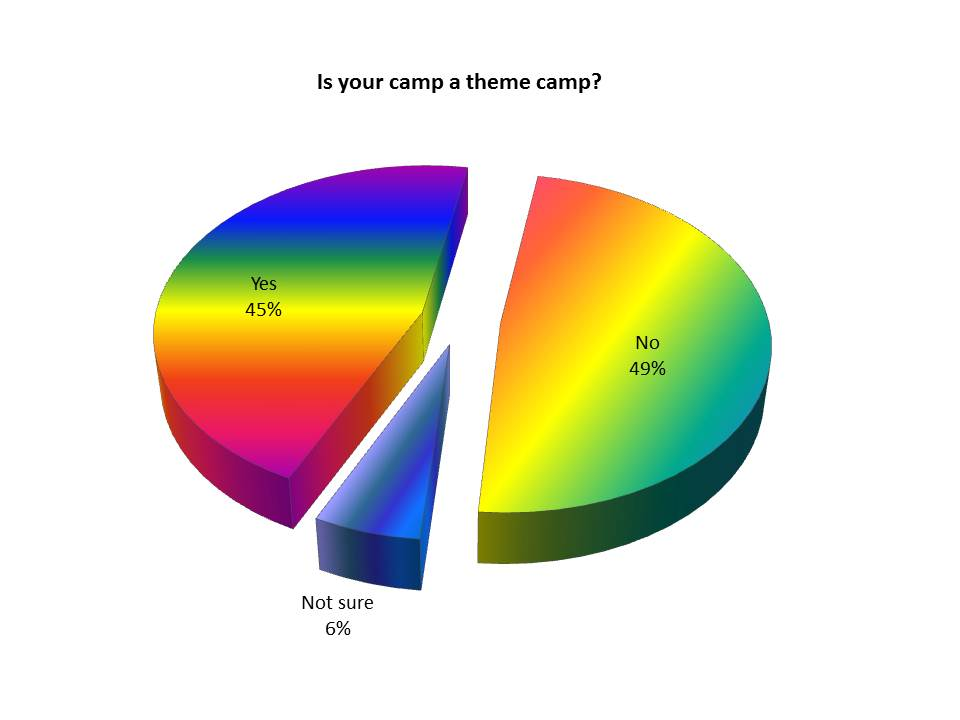
Eligible to vote in the USA
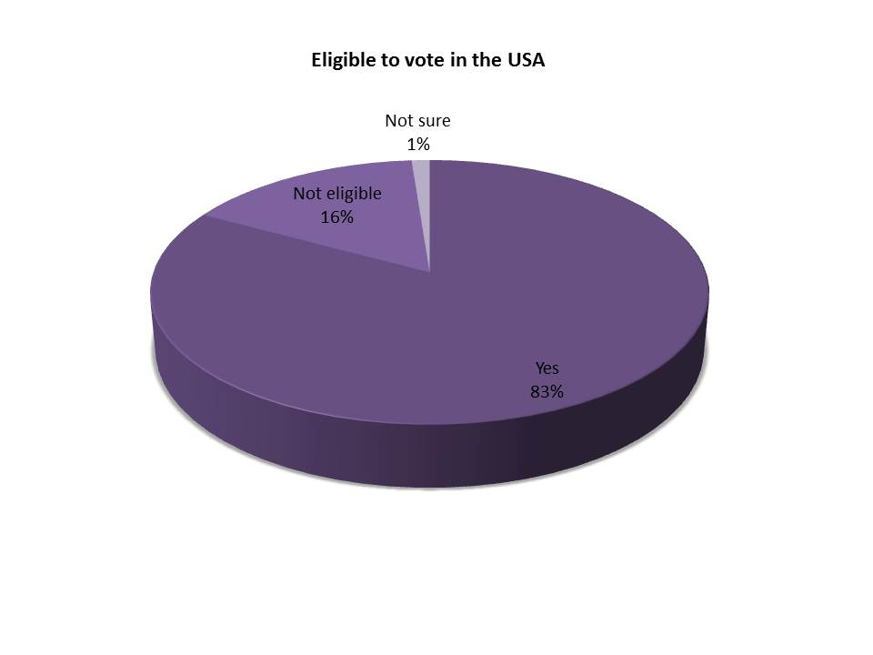
Voting frequency

Most Important Personal Values
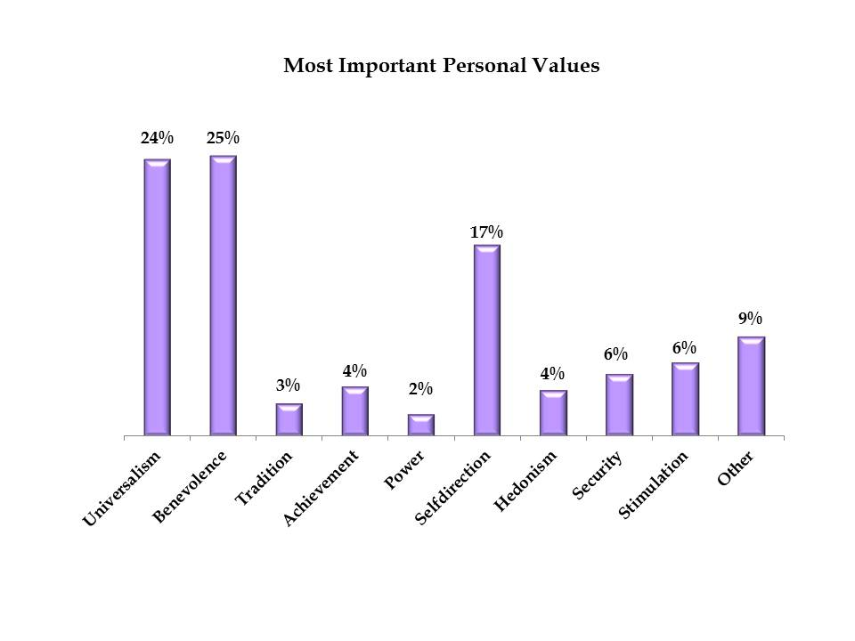
Personal values